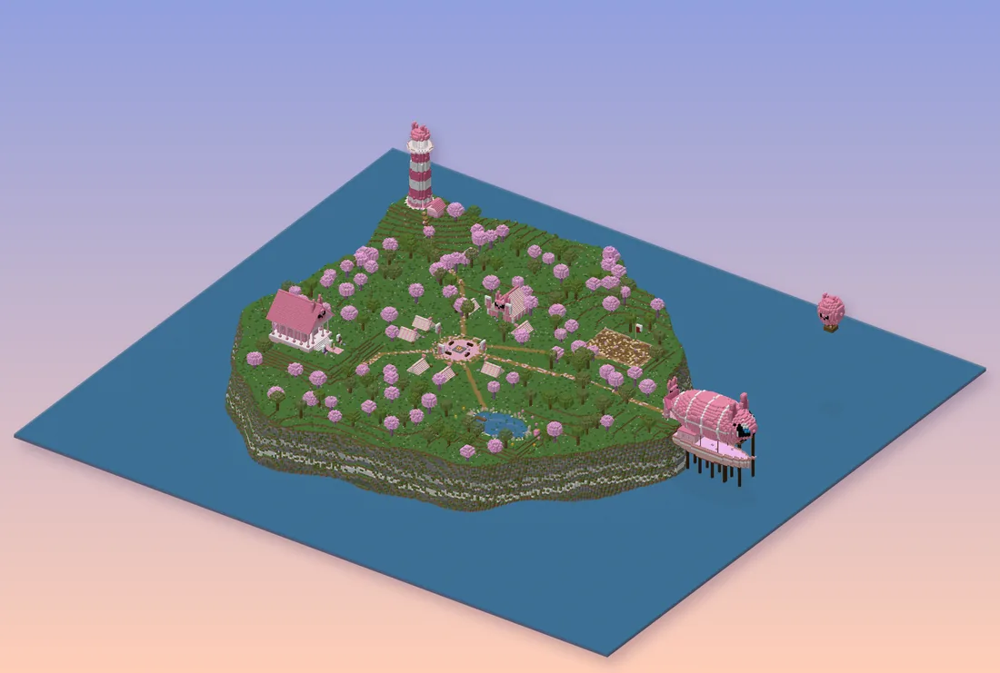

Knuffelkamp and ZwamzoetKnuffelkamp en Zwamzoet
Behind an old portal in the Guhmension lies a whole other world. Its creatures have gone grey and grumpy, and De Knuffelorde is looking for recruits who cuddle them happy again: with a pillow, an arrow or a fireball, very lovingly. You start as a recruit on Knuffelkamp, then fly to Zwamzoet, the town of giant mushrooms, where klodders lie scattered over the fields and grey scars run through the land.
Achter een oud portaal in de Guhmensie ligt een hele andere wereld. De wezens zijn er grauw en knorrig geworden, en De Knuffelorde zoekt rekruten die ze weer blij knuffelen: met een kussen, een pijl of een vuurbal, heel liefdevol. Je begint als rekruut op Knuffelkamp en vliegt dan naar Zwamzoet, de stad van de reuzenzwammen, waar klodders over de velden liggen en grauwe littekens door het land lopen.
What is really going on? (spoiler)Wat is er echt aan de hand? (spoiler)
Someone is collecting the grey fluff that grumpy creatures leak. Sacks full of it. A Mika in a cheese disguise knows more than he says.
Iemand verzamelt de grauwe pluis die knorrige wezens lekken. Zakken vol. Een Mika in kaasvermomming weet meer dan hij zegt.
Zone pageZonepagina: De Knuffelzwammen
More from the gameMeer uit het spel
Het Vadsrijk
Een eigen avonturenwereld vol klodders en zwammen. Word rekruut van De Knuffelorde, kies een klasse en vrolijk op wat grauw en knorrig is geworden. Je eigen spullen blijven veilig thuis.
De Vadsloosheid
Vroeger beschermde de grote roze draak Vahoegnir het rijk: waar hij vloog, bloeiden de bloemen. Nu is hij grauw, en waar hij langskomt worden wezens chagrijnig en verwelken de bloemen. Dat heet de Vadsloosheid. De Knuffelorde vrolijkt alles weer op: verslagen wezens worden niet verwond, ze ploffen roze en huppen blij weg.
Het verhaal van zone 1
Het hoofdverhaal (de gouden !) leidt je van Knuffelkamp naar Zwamzoet, langs de grauwe littekens van de draak, door de Klodderweide, het Sporenwoud en de Druipgrotten naar de Zwamtempel op de berg. Tussenfilmpjes lopen vanzelf; de gesprekken klik je door.
Knuffelkamp
Je komt bij zonsopgang per luchtschip aan op Knuffelkamp, het oefeneiland van De Knuffelorde. Praat met Sergeant Pluizebol, kies je pad bij het klasse-tempeltje, oefen op de trainingspoppen en ga even zitten bij het kampvuur...
Rustig, en dan...
Neem rustig de tijd in het kamp: praat met iedereen, vis met Visser Dobber of klim naar de vuurtoren voor het uitzicht op Zwamzoet. Als het kampvuur brandt en de zon opkomt boven het water, gebeurt er iets wat niemand verwacht.
Het luchtschip
Na je opleiding vliegt Kapitein Wolkewiet je naar De Haven van Zwamzoet. Stuurguh Zeppie vliegt je weer terug. Er is geen snelreizen: de kampvuren zijn je checkpoints.
Zwamzoet
De paddenstoelenstad van De Knuffelorde, met huisjes op reuzenhoeden, een markt, een smid, een stal en bovenop de hoogste zwam de ordetempel. Hier wonen guhs die je hulp goed kunnen gebruiken.
Wie woont er?
Grootmeester Vadsvoet in de ordetempel (klasse wisselen en de klassenproeven op level 10 en 20), Smid Hamerbol, Marktmeester Hamertje-Tik, Stalmeester Hoefje (je eerste rijdier rond level 8), Klerk Stempeltje bij het questbord, en een heleboel guhs met een probleempje: Oma Truus, Bakker Bram, Kleine Kiki, Dichter Daan, Professor Pluis en nog veel meer.
Quests en de questlog
Een gouden ! boven een guh is een verhaalquest, een gele ! een zijquest, een ? betekent: hier inleveren of even praten. Druk op J voor je questlog met je quests, je geheimen, de wezens die je opvrolijkte en de Avonturiersgids.
Soorten quests
Praten, wezens opvrolijken, spulletjes verzamelen (ze vallen vanzelf als je ze nodig hebt), een plek vinden, een kampvuur aansteken, een baas opvrolijken, een guh begeleiden die achter je aan loopt, en geheimen zoeken. Beloningen: xp, Vadsmunten en buit. In een groep tellen opvrolijk-quests voor iedereen in de buurt mee.
Het FTB-hoofdstuk
In het FTB-boek staat het hoofdstuk "Het Vadsrijk". Elke quest vinkt zichzelf af als je hem in het Vadsrijk inlevert. Niks staat op slot.
Geheimen van het Vadsrijk
Overal liggen geheimen: tien verloren knuffels van Kleine Kiki, verborgen schatten en vijf vreemde aanwijzingen. Ze glinsteren een beetje als je dichtbij komt. Waar leiden die aanwijzingen naartoe?
Glinsters
Hartjes = een verloren knuffel, goudgeel = een schat, paarse sterretjes = een aanwijzing. Je questlog (J) houdt bij wat je al gevonden hebt.